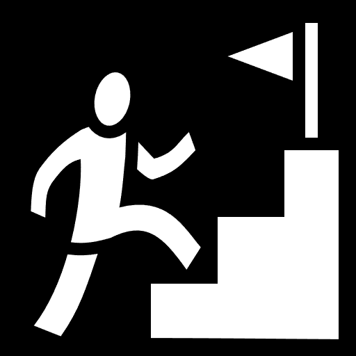

RETRO STORE RADAR

Find out what the purpose of this site is, who the man behind the site is, and our mission statement.

You're looking at Retro Store Radar, a site dedicated to helping you discover retro videogame stores, whether they're local in your area, or somewhere far away. Use this place as a simple search for stores, or get involved and submit any stores you may be aware of that are not on the site. You can also interact with other people, mention stores you've found, any neat finds you've gotten at stores, or talk about the latest releases. This place is meant to be a tool as well as a community.
Quite the looker, aren't I? My name is Caleb Ballesteros, and I am the creator of RetroStoreRadar.com. I am a lover of videogames, and have been since I was 4 years old when I picked up a controller and played Super Mario Sunshine on the Nintendo Gamecube. I enjoy playing games, as well as collecting them, and currently have a collection of over 400 physical titles. Some of my favorite games include Final Fantasy XII, Dragon Quest VIII, The Legend of Zelda: Majora's Mask, and many more. Also, I am a big David Bowie listener, so if I ever make any Bowie references, well, now you know.

The goal of this site is to allow one to easily search for any retro game stores, instead of searching blindly on google. Think of the site as a database of sorts. I also wanted this place to serve as a sort of community for the retro game collecting community, so people can share spots they may know, or just to talk about retro games in general.In short, the aim is for this site is to be a tool and community pillar for those who want a place for that sort of thing.